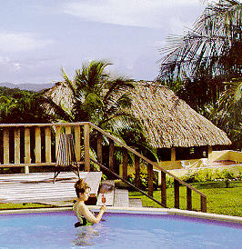
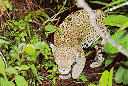

BELIZE ECO-TOURS,
part I.
Our Belize Eco-Tour hub is the beautiful
WINDY HILL RESORT near San Ignacio Village.
Visit ANCIENT MAYAN TEMPLES at TIKAL +
MOUNTAIN PINE RIDGE Forest Preserve, RIO on POOLS &
GUANACASTE Park +
XUNANTUNICH RUINS, CARACOL RUINS +
Delightful critters & gardens of BELIZE ZOOLOGICAL GARDENS.
© Copyright U.S. Dive Travel Network -- All Texts & Photos / All Rights Reserved.

Ace Belize tour guide, Hector Bol, "living on the edge" at the main temple summit,
Xunantunich Ruins. All our guests for Belize Eco-Tours are lodged in comfy cabanas
at the beautiful 100-acre hillside restreat, Windy Hill Resort, near San Ignacio village.
© Copyright John Hessburg, U.S. Dive Travel.

Bird's-eye view of the central plaza at Tikal, ancient Mayan capital in Guatemala.
Our Tikal Ruins tour, guided by English-speaking experts, offers stunning vistas.
An easy 90-minute drive from Windy Hill Resort, these Tikal Ruins will enhance
your adrenaline & joy as you climb & photograph pyramids -- up to 220 feet high.
© Copyright John Hessburg, U.S. Dive Travel.

Click here to return to -- BLACKBIRD CAYE RESORT & MANTA RESORT page !
Or click here for -- more fun photos of SAN IGNACIO VILLAGE & TIKAL !
Classic 3-day / 2-night tour includes this
generous Belize mainland itinerary of scenic hikes, eco-tours, photo tours & cultural
adventures: a full day trip to nearby Guatemala to visit the magnificent
ancient Mayan ruins at Tikal + the Xunantunich Ruins at San Jose Succotz
in Belize + the world-renowned outdoor-natural-habitat
Belize Zoo + lodging at Windy Hill Cottages in highland San Ignacio, Belize.
Package also includes all meals at resort (not on road) + chauffeur & tour guide + all transportation
in an air-conditioned van + all visa & Tikal Park entry fees for Guatemala
+ 2 nights lodging in a private cottage with hot shower, ceiling fan, veranda
& hammock. We also offer add-ons of 1,2 or 3 more nights at Windy Hill, to take in
the world-famous Mountain Pine Ridge eco-tours in Belize. Windy Hill also offers swimming,
canoeing, horseback riding
& side tours. Windy Hill Resort & San Ignacio in Belize are at
the very heart of Belize eco-tours. This is really where the best of Belize
eco-tourism starts & ends.
Windy Hill Resort is centrally located in
the Belize Interior, near the colorful & delightful Old World village of San Ignacio -- which allows our clients safe & efficient access to all the eco-travel
highlights that have made the Belize mainland famous. (The famous Tikal pyramids are right across the Guatemala border,
only a relaxing 90-minute drive from San Ignacio.)
Windy Hill Resort recently completed an extensive renovation effort that now offers high-quality new orthopedic mattresses in all rooms. Plus, they have added king size beds & air-conditioning to the three honeymoon cottages. A new fitness center has been constructed, and the in-ground swimming pool is in mint condition.
Our Tikal pyramids tour is among our most popular side tours we offer anywhere in the world. Tikal tours are fun, affordable & a stimulating educational experience, even for folks who feel they've seen it all in eco-tours & eco-travel.
Don't leave Belize without at least tasting a bit of the magic that was the Mayan culture. These Mayan ruins are
impresionantes ! Our clients report to feeling thrilled & humbled at their first sight of
the looming Tikal Ruins. Tikal makes you stop & think about the vanity of human wishes; the power of humankind & the pomposity of much that we know as human striving. The Mayan ruins are a mute but potent testomony to that which is at once best & worst about any civilization. We have so much to learn from Mayan culture, because history does repeat itself. The Tikal Ruins, Mayan ruins in general, are a moving metaphor for a force that is both majestic ethos & Achilles heel in all human social systems -- ambition. So you see, amigos, the Tikal Ruins are far more than stone upon meticulously crafted stone. You need to see these Mayan ruins to know what we mean. And all gravity aside, they are just plain super-fun to touch, photograph & wonder about the depth of that ancient culture that rivaled any Chinese dynasty yet never even knew to invent the wheel for stone-hauling labor. Go figure! Tikal -- even the sound of that name gets the heart started. Far more than Xunantunich does, eh! That makes your tongue fit to be tied.
For an additional (nominal) fee per client + daily room & board + tariffs, we can add on a custom basis an exciting HALF-DAY BELIZIAN CAVING ADVENTURE, from 9 am to 3 pm roughly, & you have the option of either: (1) Hiking deep in to the Che Chem Ha caverns with experienced guides or (2) Canoeing almost one mile deep into the famous Barden Creek Caves, with a mult-lingual & historically savvy personal guide. These side tours are breath-takingly beautiful, very safe & well worth adding an extra day to your Belize eco-tour itinerary.
|

WINDY HILL RESORT founder, Bobby Hales,
now retired, is one of our dear CentrAm friends.
This lush 110-acre hillside paradise is well-run,
offers lovely private cabanas & superb meals.
|

Pool, lodge at WINDY HILL RESORT,
pearl of San Ignacio, Belize Highlands.
Rudel & Cesar Alvarez offer 25 cabanas:
built from beautiful native hardwoods.
Best hilltop units are Cabanas # 14-25.
Resort has many horses, 40 staff + guides
on constant continuing-ed for eco-tours.
This picture is courtesy of Windy Hill.
|
|

WINDY HILL RESORT: standard cabana.
© Copyright U.S. Dive Travel Network.
|

WINDY HILL RESORT: deluxe cabana.
© Copyright U.S. Dive Travel Network.
|

Honeymooners Shane & Kathy Olin of Calgary, enjoy their hilltop cabana.
© Copyright U.S. Dive Travel Network.

Another angle on honeymoon cabana, WINDY HILL RESORT.
© Copyright U.S. Dive Travel Network.
|

Our newlyweds enjoy dessert + Bilikin, in...
© Copyright U.S. Dive Travel Network.
|

... the al fresco dining lodge at WINDY HILL.
© Copyright U.S. Dive Travel Network.
|

Belize honeymoon beauty, Kathy Olin, chillin' poolside at WINDY HILL.
© Copyright John Hessburg, U.S. Dive Travel Network.

Our Belize honeymoon couple, lovin' their pool time.
© Copyright U.S. Dive Travel Network.
CALL our EXPERT TRAVEL PLANNNERS at 952-953-4124 for DETAILED TOUR PRICE QUOTES.
For those eco-travelers with a yen to dig deeper into the mysterious
& beautiful Belize Interior, we also have more than a dozen other eco-tour
packages that mix & match various combinations of eco-tours & Mayan
ruins. These eco-tours run from 3 to 7 days long. Here are thumbnail sketches
of the great Belize eco-adventure sites you can visit, using Windy Hill as your
hospitable & comfortable base of operations. Just tell us which eco-tour
combo you prefer & we'll customize a private adventure tour for you
within a few hours of your phone call. Whether you want the Tikal tours, the Belize Zoo, Xunantunich Ruins or the
Mountain Pine Ridge Forest Preserve, we can package these back-country eco-tours in short order for your safety & convenience.
If you want a customized eco-tour, for example with 1 or 2 extra nights in the Belize Interior, or an extra night in Tikal, or lodging in Tikal itself overnight, we can also accommodate this, & a custom price will be set for you, by deriving a per diem from the base rate for 3 nights, then extrapolating. We can mix & match any combo of days & locales that you wish, any season, amigos !!

Senior Belize tour guide, Hector Bol, with his taller, younger understudy,
Jorge de Leon. These friendly gents are both family men in San Ignacio,
fluent in English & Spanish, gifted with exceptionally keen knowledge of
ancient Mayan ruins in the Belize Interior. Their humor was refreshing !
© Copyright John Hessburg, U.S. Dive Travel.
TIKAL RUINS, PHOTO & ECO-TOUR:
Here, just a few miles across the Guatemala border, the
ancient Mayans built the largest & most impressive pyramids in Meso-America
-- mighty TIKAL -- dwarfing even the awe-inspiring structures of Copan
in Honduras & Chichen Itza in Mexico's Yucatan. Tikal is one of the
most exciting & educational day journeys anywhere in Central America
& a "must see" for anybody with a few extra days after your
Belize Barrier Reef diving adventure. These Tikal pyramids & ancient
buildings are set deeply into the Guatemalan high-canopy jungle, where
many intriguing critters still roam freely for those with a ready camera.
The Tikal pyramids are the tallest manmade structures in the Western Hemisphere,
which were built before the modern age. One Tikal edifice towers to more
than 260 feet! That's enough to give any aficionado of Mayan history an
Edifice Complex. The Tikal ruins are simply a MUST-SEE for any eco-tourists
heading to Belize. We enthusiastically recommend you take the time; you
will always be glad you did visit the Tikal ruins. What amazes us is that
at no time in our grade-school nor high-school years did the American educational
system ever acquaint our generation with even one scintilla of knowledge
about the truly magnificent Tikal ruins, nor the Copan ruins in Honduras.
One of the things we continually relearn on our global travels is that
the U.S. has been too provincial & too short-sighted a culture for
far too long. There is such an infinite world of intriguing anthropology,
discovery, eco-tourism & just plain good old-fashioned Meso-American
adventure to be found in Belize eco-tours, Guatemala eco-tours, & of
course visits to these wonderful Mayan ruins. We strongly recommend you
take advantage of your island stays in Belize, & the proximity, to
take a few special days to visit the Tikal ruins, the Belize Zoo, Xunantunich
ruins, Mountain Pine Ridge Forest Preserve, the Guanacaste Park eco-tour,
& the many natural wonders of mainland Belize. You will NEVER regret
that you took this time. Take a look below & see if our Tikal tours, or any other Belize eco-tours
may ring a bell for you.
|

Big cat, Belize Zoo.
|

Windy Hill room.
|
BELIZE ZOO, ECO-TOUR:
This world-famous jungle animal compound is far removed
from the city, ensconced in the beautiful back country of Belize, &
is home to more than 100 indigenous species such as sleek prowling jaguars,
comical tapirs, black howler monkeys & scarlet macaws. Not to worry,
this is not some cheesy take-off of the San Diego Zoo that's glutted with
weird tourists in garish garb & knee socks. The Belize Zoo is truly
one of the world's most renowned outdoor jungle animal preserves. The Belize Zoo complements our Tikal tours nicely.
It is right on the way to Windy Hill Resort, between Belize City & the hill country, quite convenient & no hassle. You are
perfectly safe here at the Belize Zoo, with the expertly constructed moats & fencing they
have designed. And you will have an opportunity that few city dwellers
ever have: to experience an invigorating, up-close-&-personal encounter
with sleek, powerful jungle cats that most of us only see in Hollywood
movies. This eco-tour is another "must-see" for first-time visitors
to mainland Belize. You will be delighted here.
EL PILAR, PHOTO TOUR:
This is the largest Mayan center in the Belize River
region, & dates back to 250 B.C. The El Pilar site contains 15 courtyards
& ball courts, a huge palace & a causeway. This site is still under
excavation, so you can see the gentle uncovering process as it's underway.
Wait until your guide gives you the punchline about how the ancient Mayan
warriors exerted their testosterone on these playing-for-keeps game fields.
At El Pilar, the rules of engagement were pretty serious, & make NFL field roughness
look like kiddie playground antics. We won't spoil the story for you. Wait
until your guide takes you on a thrilling look backward at the Mayan culture,
a people as imbued with savage pagan intensity as they were with sheer
genius in the realms of mathematics, astronomy, architecture & fine
art. El Pilar has a lot to tell us, still hiding beneath those cold clean stones.
GUANACASTE PARK, ECO-TOUR:
This 50-acre sector of tropical forest features the mammoth
Guanacaste tree, which towers as high as 130 feet & grows to 6-foot
diameters. You'll also marvel at other rare & exotic trees in Guanacaste
Park, such as the raintree, mammee apple, bookut, quamwood, cotton tree,
Cohune palm, & the national tree of Belize, the mahogany. But the wild
animals here are the biggest attraction by far; & there are some bizarre
species: jaguarundis, kinkajous, pacas, armadillos, agoutis, white-tailed
deer, iguanas & possums. More than 100 species of exotic jungle birds
have been spotted here in Guanacaste Park by sharp-eyed birdwatchers, including
blue-crowned motmots, black-faced ant-thrushes, smoky-brown woodpeckers,
black-headed trogons, squirrel cuckoos, bright-rumped Attilas & white-breasted
wood wrens. Do not miss the Guanacaste Park eco-tour, if you have the chance. This Guanacaste Park side tour also complements the
Tikal tours quite smoothly.
|

Xunantunich, El Castillo.
|

Xunantunich Frieze.
|

Our Belize eco-tours guide preps group before climbing pyramid
at the Xunantunich Ruins -- ancient site near San Ignacio, Belize.
© Copyright John Hessburg, U.S. Dive Travel.
XUNANTUNICH RUINS, PHOTO TOUR:
This major Mayan center is reached only by ferry from
San Jose Succotz. The finest structure here at the Xunantunich ruins is
the famous "El Castillo," a 130-foot pyramid that looms over
the South side of the city, which is still being excavated. You can climb
this Xunantunich pyramid to its summit for some wonderful views of Belize
& Guatemala hill country. Take a gander at the strange Old World energies
of Xunantunich. It's a real archeo-buzz. The Xunantunich ruins complement our Tikal tours quite naturally.

Upper 1,000 feet of Thousand Foot Waterfalls, from 500 meters away,
in Mountain Pine Ridge Forest Preserve. Falls is actually 1,500' high.
© Copyright John Hessburg, U.S. Dive Travel.
MOUNTAIN PINE
RIDGE, FOREST PRESERVE, ECO-TOUR:
This 300-square-mile ecological preserve offers cool
pine forests, sparkling streams, green river valleys, plus caves &
awesome waterfalls. One such cascade in the heart of Mountain Pine Ridge
tumbles in a narrow silvery knot more than 1,000 feet from the cliffs above!
You also can see the ancient Mayan mining cave called Rio Frio, which is
easy to hike into & explore safely. Our clients have written us simply
glowing letters about their adventures in the Mountain Pine Ridge Forest
Preserve. Mountain Pine Ridge is another "must-see," we feel. Perhaps more than all our other Belize eco-tours,
Mountain Rine Ridge is the one that clients prefer to pair with Tikal tours.

Cool Rio on Pools park inside Mountain Pine Ridge Preserve.
© Copyright John Hessburg, U.S. Dive Travel.

Guide Jorge de Leon leapin', Rio on Pools, Mountain Pine Ridge.
© Copyright John Hessburg, U.S. Dive Travel.
LOST MAYAN CITY of CARACOL, PHOTO
TOUR:
First discovered in 1938, & explored a bit in the
1950s, it wasn't until 1985 that scientists learned that Caracol's round
carved stone altar tells a gripping tale of battle in which the residents
of this city defeated the mighty warriors of Tikal, once the most powerful
city-state in all the Mayan world. The largest pyramid here at Caracol
is called Canaa (meaning "sky palace") & it towers 140 feet
above the jungles. This is actually the tallest manmade structure anywhere
in Belize. It's a bit of a hike into Caracol, so we'll need to link you
up with specially-trained native guides & you'll need good backpacking
gear. Caracol is no place for raw amateur hikers. It's a bit of a cardio-pump,
nothing serious, but enough to get the old ticker into rock & roll
mode. So be trained & in good stretch, & bring footwear a tad sturdier
to Caracol than tenny-runners, please. Caracol is Cara-cool.

Tikal Ruins expert Hugo Estrada KNOWS Mayan lore.
© Copyright John Hessburg, U.S. Dive Travel.
CHECHEM-HA RUINS, PHOTO &
ECO-TOUR:
For more than 1,200 years this magical cave of Chechem-Ha
existed untouched by modern civilization, until explorers chanced upon
it only a few years ago. Your experienced back-country guide will lead
you down into this safe yet electrifying underground ceremonial center
of the ancient Mayas. You'll see an eerie altar & wonderful pottery
at Che Chem Ha, still intact after centuries of stony sleep in the belly
of Belize's remote jungle.

Guatemalan villagers pay homage to Mayan ancestors near the summit,
Grand Pyramid at Tikal, nerve center of an ancient city of 100,000 souls.
© Copyright John Hessburg, U.S. Dive Travel.
Click here to return to -- BLACKBIRD CAYE RESORT & MANTA RESORT page !
Or click here for -- more fun photos of SAN IGNACIO VILLAGE & TIKAL !
ANYTHING YOU CAN DREAM of, WE CAN CUSTOMIZE your BELIZE ECO-TOUR OPTIONS for '08 & '09 --
(Call for up-to-the-minute current prices for Belize eco-tours & Tikal Ruins: 952-953-4124. Here are some of our classic tours...)
Tour # 1: Mountain Pine Ridge + Belize Zoo + Xunantunich Ruins (3 days / 2 nights).
Tour # 2: Tikal Ruins + Belize Zoo + Xunantunich Ruins (3 days / 2 nights).
Tour # 3: Mountain Pine Ridge + Tikal Ruins + Belize Zoo + Xunantunich Ruins (4 days / 3 nights).
Tour # 4: Mountain Pine Ridge + Belize Zoo + Xunantunich Ruins + Horseback Riding or Canoeing
(4 days / 3 nights).
Tour # 5: Tikal Ruins + Horseback Riding or Canoing + Belize Zoo + Xunantunich Ruins (4 days / 3 nights).
Tour # 6: Mountain Pine Ridge + Tikal Ruins + Belize Zoo + Horses or Canoeing + Xunantunich Ruins
(5 days / 4 nights).
Tour # 7: Tikal Ruins Overnight + Mountain Pine Ridge + Belize Zoo + Xunantunich Ruins (5 days / 4 nights).
Tour # 8: Tikal Ruins Overnight + Horseback Riding or Canoeing + Belize Zoo + Xunantunich Ruins
(5 days / 4 nights).
Tour # 9: Cacarcol + Che Chem Ha + Belize Zoo + Xunantunich Ruins
(4 days / 3 nights).
Tour # 10: Caracol + Tikal Ruins + Belize Zoo + Xunantunich Ruins
(4 days / 3 nights).
Tour # 11: Caracol + Tikal Ruins + Horseback Riding or Canoeing + Belize Zoo + Xunantunich Ruins
(5 days / 4 nights).
Tour # 12: Mountain Pine Ridge + Che Chem Ha + Belize Zoo + Xunantunich Ruins
(4 days / 3 nights).
Tour # 13: Mountain Pine Ridge + Che Chem Ha + Horseback Riding or Canoeing + Belize Zoo + Xunantunich Ruins
(5 days / 4 nights).
Tour # 14: The ULTIMATE ECO-ADVENTURE TOUR -- All main tour sites combined !
(7 days / 6 nights).
FOR MORE INFORMATION or RESERVATIONS:
Please feel free to contact:
John Hessburg, General Manager
Susan Hessburg, Operations Manager
U.S. DIVE TRAVEL Network
PMB 307 / Suite # 116
15050 Cedar Avenue S.
St. Paul, MN, USA 55124-7046
Voice Mail: 952-953-4124
E-mail: divetrip@bitstream.net
Website: www.usdivetravel.com
Click here to return to -- BLACKBIRD CAYE RESORT & MANTA RESORT page !
Or click here for -- more fun photos of SAN IGNACIO VILLAGE & TIKAL !
IMPORTANT REMINDER about PRICES & TARIFFS:
All prices for Belize eco-tours & Tikal Ruins tours listed here are subject to possible change in this steadily evolving travel market. Lodging, side tour & diving prices are traditionally stable, while air prices can fluctuate daily. Until air tickets are issued, all airlines reserve the right to change airfares without notice -- an industry standard per FAA rules. We at U.S. Dive Travel will price-protect you to the utmost of our professional ability; & that has been our pledge for one decade now. Our experts for Belize eco-tours & Tikal Ruins tours normally secure excellent wholesale discount air tickets for our clients who book early enough to secure limited seats in the best price categories. Remember please, the federal government has deregulated all U.S.-based airlines, so only they control their pricing -- not any travel professionals. Early is good when seeking the best air ticket rates for your Belize eco-tours & Tikal Ruins tours.
Unless specifically noted, these above prices for Belize eco-tours & Tikal Ruins tours are only the land-based portion of the vacation, not air tickets, in most cases reflecting double-occupancy rooms. At many resorts, there will be no triple-occupancy rooms offered. Some exceptions will be noted on these Belize eco-tours & Tikal Ruins tours. International air tickets & commuter "island-hopper" seats are always extra above these land costs. Nominal service fees are also extra for air tickets & the vessel + side tour components. The baseline tariffs for all clients start at $55 per person for the land portion + $35 pp for the air tickets. Late-booking clients may receive slightly higher tariffs on the lodging + diving at many of our dive resorts.Please feel free to call us any time for more details about Tikal, Tikal ruins, Belize eco-tours, Belize eco tours, Xunantunich, Mountain Pine Ridge, Guanacaste, Belize Zoo, Windy Hill, Windy Hill Resort -- 952-953-4124.
The preferred payment mode for all of our dive resorts, side tours & air ticket specials -- in particular Tikal, Tikal ruins, Belize eco-tours, Belize eco tours, Xunantunich, Mountain Pine Ridge, Guanacaste, Belize Zoo, Windy Hill, Windy Hill Resort-- is by e-check, ACH or wire transfer in U.S. dollars. All clients for our Belize eco-tours & Tikal Ruins tours living outside the USA or Canada will need to pay for their Belize vacations via direct wire transfer only. No personal checks will be accepted for any Belize eco-tours or Tikal Ruins tours. Thank you for your gracious understanding. Our service level is the highest & our prices the lowest in this industry, & thus we need to preserve a reasonable margin. For published-fare air ticket bookings, USDT always accepts Visa & Mastercard. For ultra-discount wholesale air tickets on these Belize eco-tours & Tikal Ruins tours, USDT accepts only cashier's checks or wire transfers, please.
Remember, all tropical vacation clients to all foreign destinations will be asked by local officials overseas, upon departing the airport on your final day, to pay a nominal government departure tax, usually between USD $35 - $40 per client. USDT cannot collect this tax beforehand, so you simply pay it down there, in your host country. Be sure to stash away a little cash for this final moment at the airport, so you'll get your exit visa stamped quickly with no fuss; & away you go. Best of luck with your Belize eco-tours & Tikal Ruins tours. We hope your Belize vacation is a safe & satisfying adventure. Blessings & best wishes with ALL your Belize eco-tours & Tikal Ruins tours.
Best fishes too!
>////*> <*\\\\<
John Hessburg & Susan Hessburg, Mgrs.
U.S. Dive Travel Network.
Click here to return to -- BLACKBIRD CAYE RESORT & MANTA RESORT page !
Or click here for -- more fun photos of SAN IGNACIO VILLAGE & TIKAL !
© Copyright U.S. Dive Travel Network -- All Texts & Photos / All Rights Reserved.